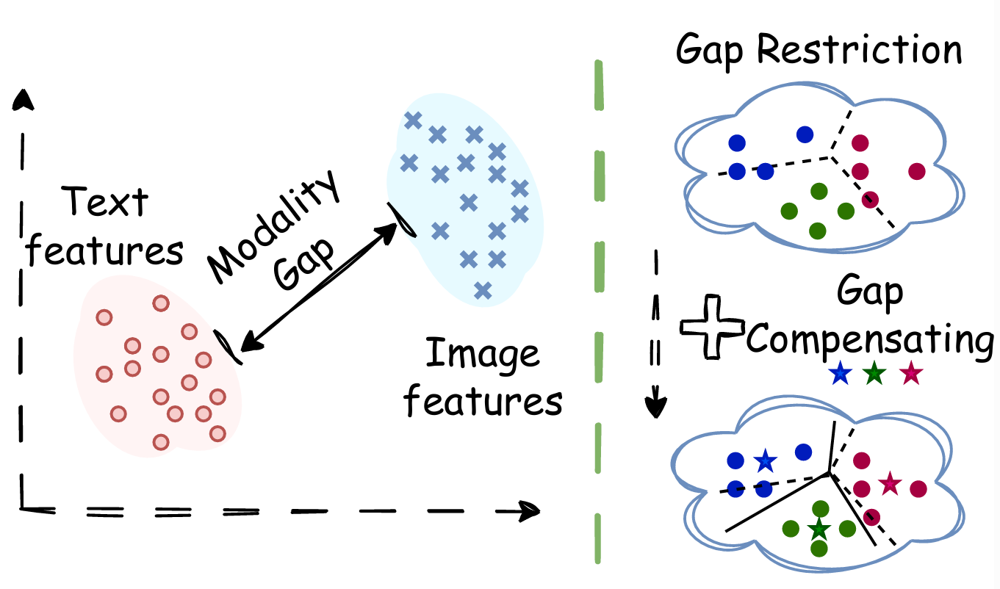
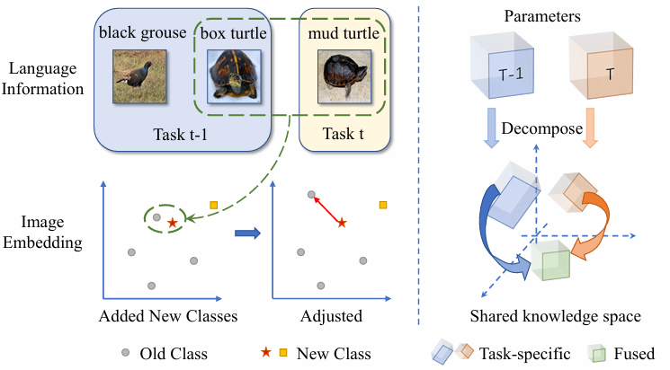
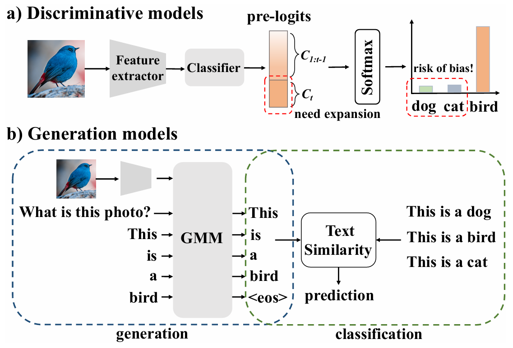

|
Linlan Huang
I am currently a Ph.D. student in Tianjin Key Laboratory of Visual Computing and Intelligent Perception (VCIP) at the College of Computer Science, Nankai University, supervised by Prof. Xialei Liu.
Before entering the Ph.D. program through a combined master's and doctoral track, I completed my undergraduate studies at the same college.
My current research interest includes continual learning and multi-modal learning. Additionally, I am currently maintaining a list of Awesome Incremental Learning resources.
Email /
Scholar /
Github
|
|
Publications
|

|
Mind the Gap: Preserving and Compensating for the Modality Gap in CLIP-Based Continual Learning
Linlan Huang, Xusheng Cao, Haori Lu, Yifan Meng, Fei Yang, Xialei Liu
ICCV, 2025, highlight
arXiv / code
This paper leverages the new perspective, the inherent modality gap in CLIP, to preserve old knowledge and enhance continual learning performance.
|
|

|
Class-Incremental Learning with CLIP: Adaptive Representation Adjustment and Parameter Fusion
Linlan Huang, Xusheng Cao, Haori Lu, Xialei Liu
ECCV, 2024
arXiv / code
This paper tackles class-incremental learning with CLIP by leveraging text-guided semantic cues and fine-grained parameter fusion.
|
|

|
Generative multi-modal models are good class incremental learners
Xusheng Cao, Haori Lu, Linlan Huang, Xialei Liu, Ming-Ming Cheng
CVPR, 2024
arXiv / code
This paper uses generative models to handle class-incremental learning through language generation.
|
|
{kind=link}